SPECIAL OFFER AVAILABLE TODAY ONLY
+120 Visual Clinical Endodontics Atlas
WITH CORONAL ACCESS CAVITIES, PULPAL DIAGNOSIS, ENDODONTIC FILES, IRRIGATION & CLINICAL STEPS ORGANIZED FOR STUDY, REVIEW, AND QUICK REFERENCE

Keep +120 visual atlas plates on your phone to master and reference the core concepts of Clinical Endodontics—including internal anatomy and tooth-by-tooth access cavities, AAE pulpal & periapical diagnosis, rubber dam isolation, working length, hand & rotary instrumentation, irrigation, intracanal medication, obturation, and procedural accident management.
Receive instant access directly on your WhatsAppand via
WhatsAppand via email
email
LOOK INSIDE THE MATERIAL YOU WILL RECEIVE
Library preview of +120 Visual Clinical Endodontics Atlas sheets, organized so you can quickly visualize coronal access cavities, internal anatomy, pulpal diagnosis, ISO file sizes, irrigation protocols, clinical workflows, and key endodontic concepts.
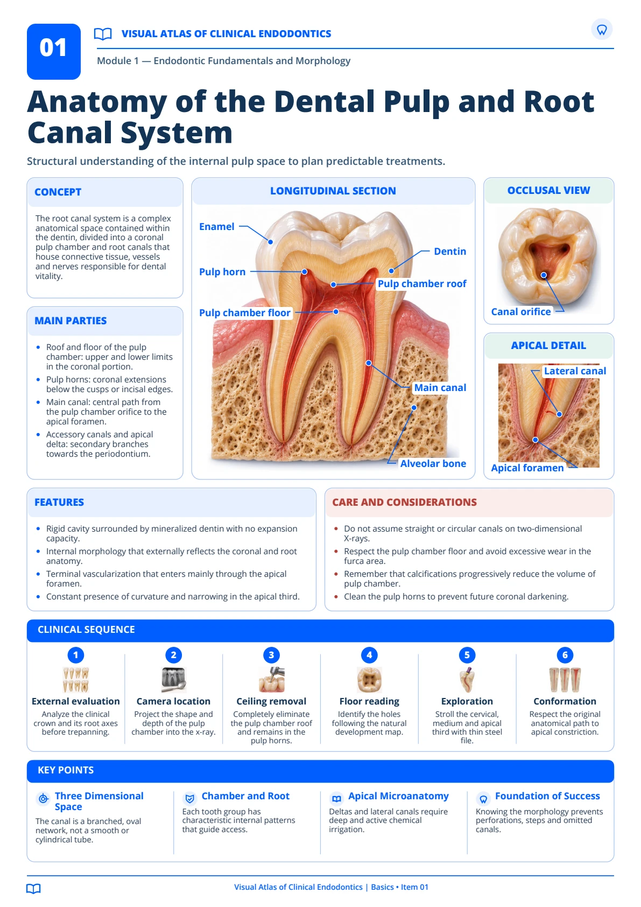

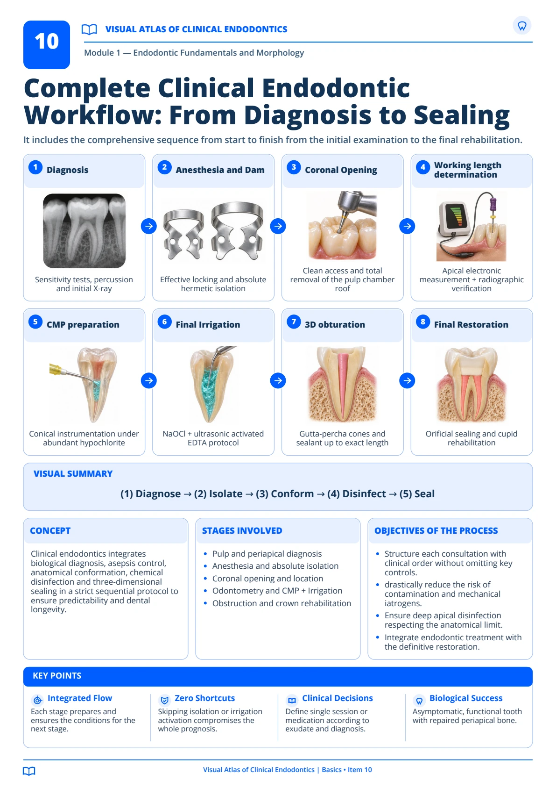
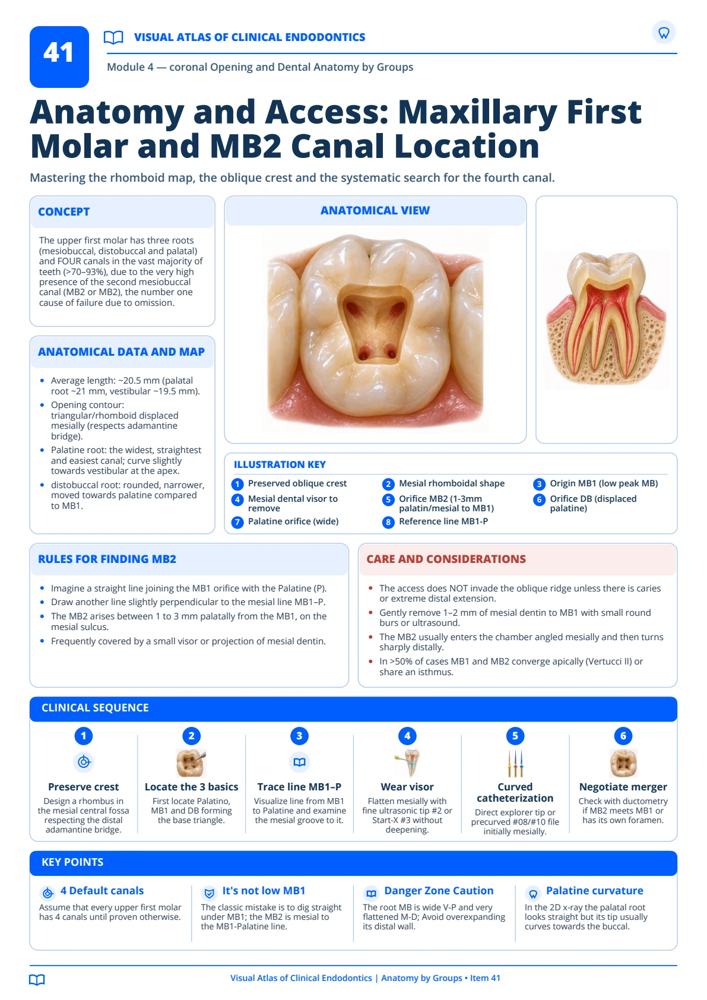
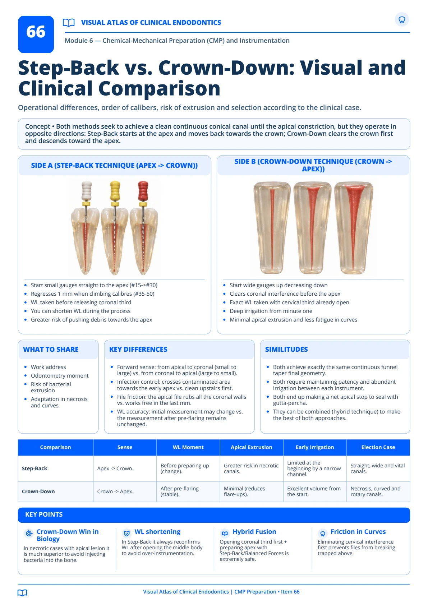
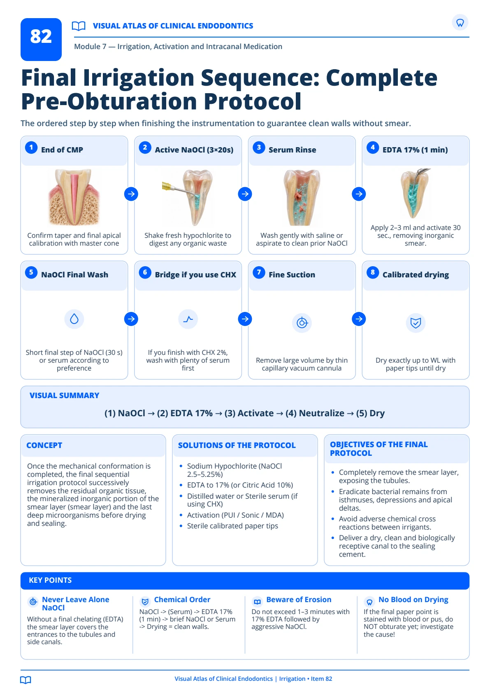
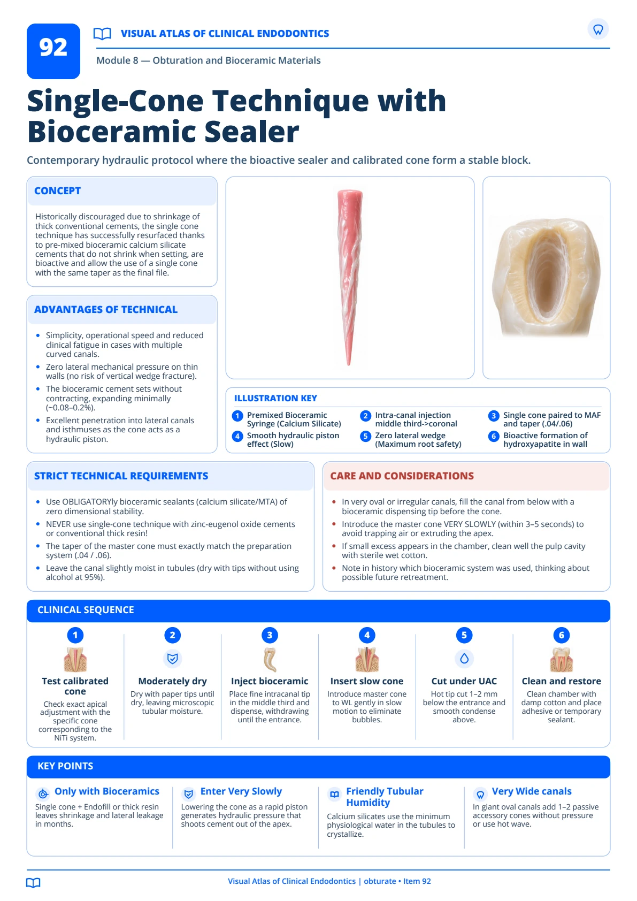
Stop wasting time hunting for the same clinical information across scattered lecture slides, notes, and bulky textbooks.
With the Visual Atlas of Clinical Endodontics, you can find the exact topic you need in seconds and immediately review:
- Internal anatomy & tooth-by-tooth access cavity outlines
- Pulpal & periapical diagnosis (AAE Consensus)
- Rubber dam isolation & clamp selection chart
- Electronic apex locator (EAL) & radiographic working length
- Key classifications (Vertucci, Krasner-Rankow, Schneider)
- Hand, continuous rotary & reciprocating instrumentation
- Irrigation protocols & intracanal medication
- 3D obturation techniques & bioceramic sealers
- Procedural errors, accidents & clinical rescue protocols
- Quick-reference summaries for chairside review
Simply open it on your device, jump to the topic you need, and use the Atlas as your visual guide to study, review, or check right before seeing a patient.
IDEAL FOR DENTAL STUDENTS, NEW GRADUATES & CLINICIANS MASTERING ENDODONTICS
If you are a dental student, recent graduate, or clinician sharpening your daily endodontic practice, use this visual library to:
- Review exact access cavity outlines and canal counts right before clinic sessions or board exams.
- Confidently differentiate reversible pulpitis, irreversible pulpitis, pulp necrosis, and apical periodontitis.
- Visually identify ISO file color codes, tapers, Gates-Glidden/Largo drills, and rubber dam clamps.
- Compare Step-Back vs. Crown-Down techniques and continuous rotary vs. reciprocating kinematics.
- Locate challenging canals such as MB2 in maxillary molars or the lingual canal in mandibular incisors.
- Master irrigation protocols (NaOCl, 17% EDTA, 2% CHX) without adverse chemical interactions.
- Follow clear step-by-step sequences for working length, shaping, and obturation.
- Look up key classifications (Vertucci, Krasner-Rankow laws, IADT trauma guidelines) without digging through 800-page textbooks.
- Know exactly how to prevent and manage ledges, perforations, separated instruments, and NaOCl accidents.
- Do a 2-minute chairside review on your phone right before treating your patient.
If you relate to at least two of these situations, the Visual Atlas of Clinical Endodontics was designed to streamline your study routine, exam prep, and clinical practice.
HOW MANY TIMES HAVE YOU SECOND-GUESSED AN ACCESS OUTLINE, PULPAL DIAGNOSIS, OR FILE SEQUENCE AND HAD TO LOOK EVERYTHING UP AGAIN?
⏰ Take advantage of this limited-time offer
SEE WHAT DENTAL STUDENTS & CLINICIANS ARE SAYING
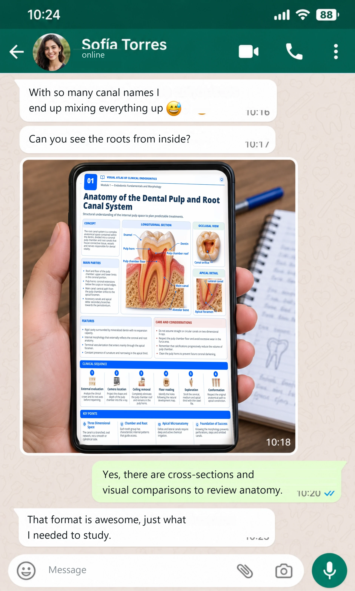

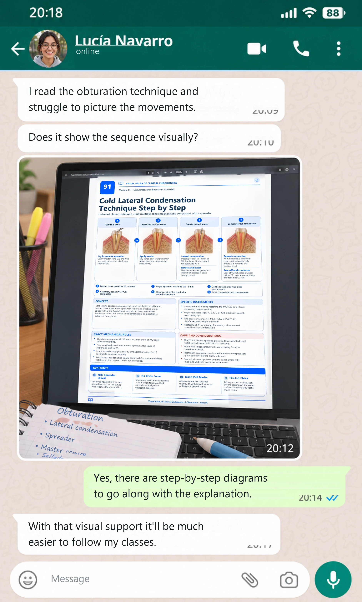
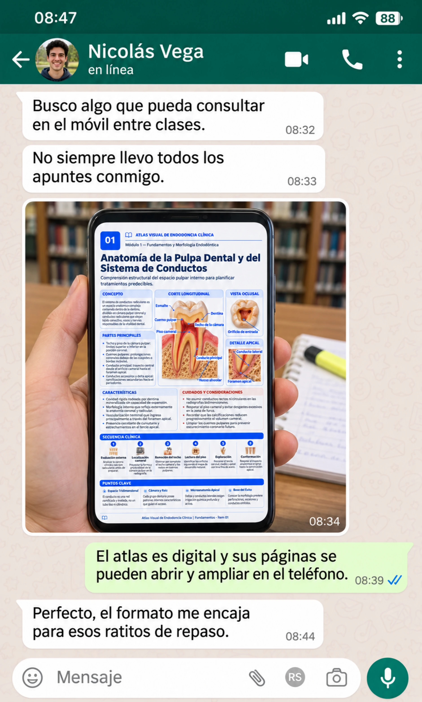
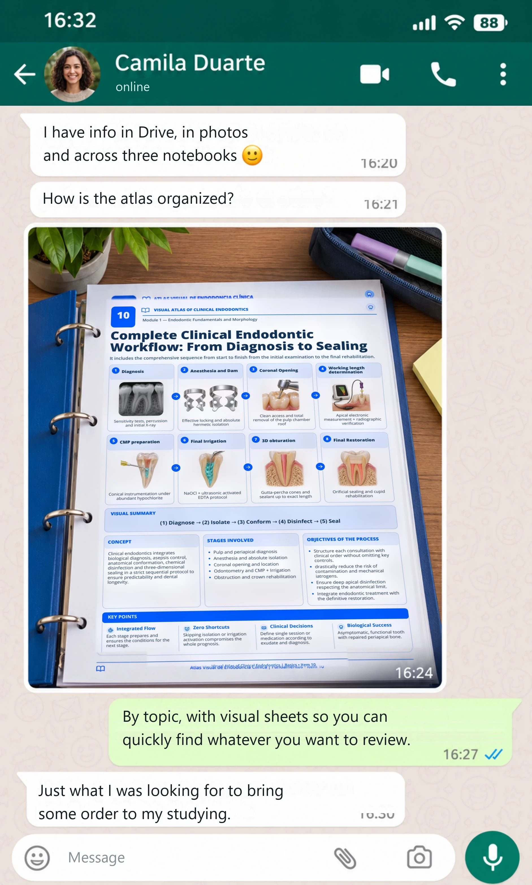
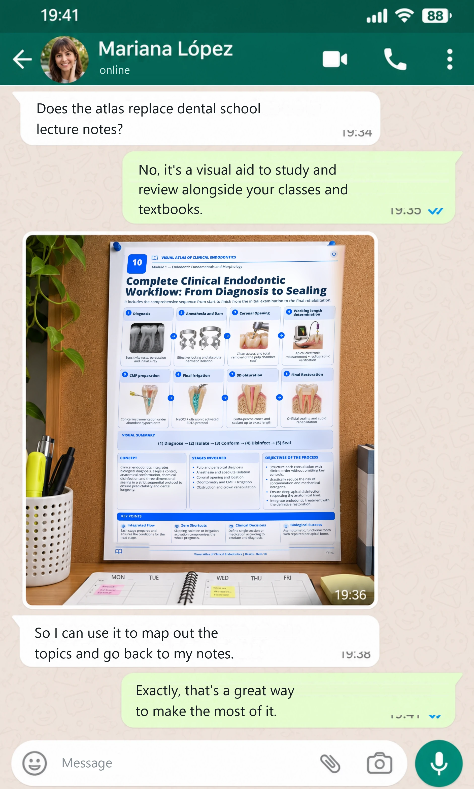
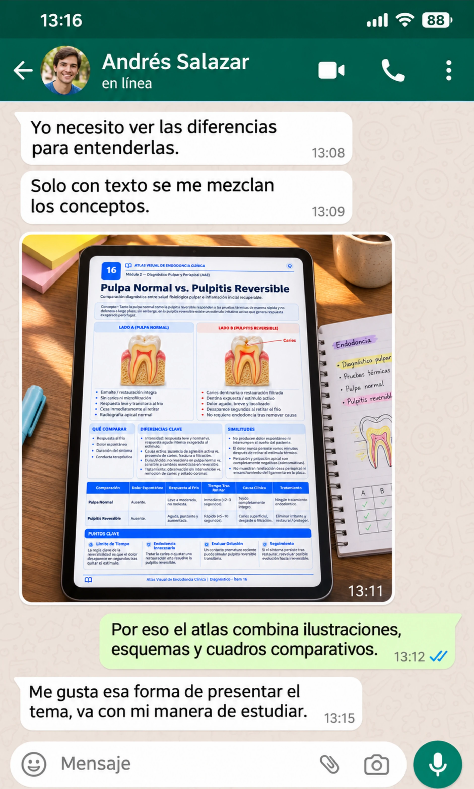
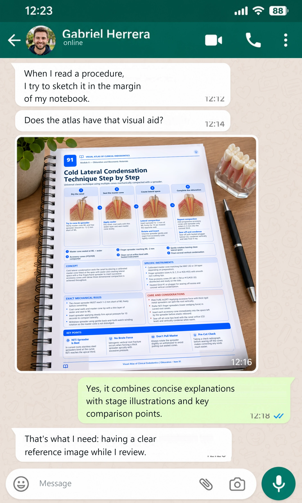
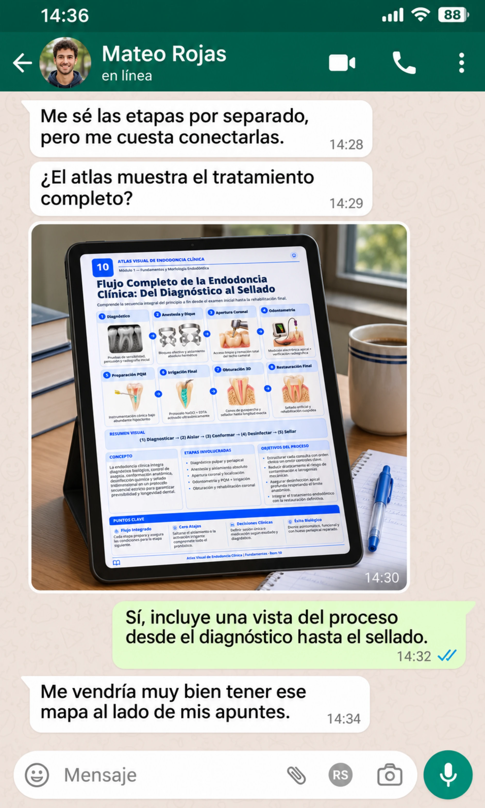
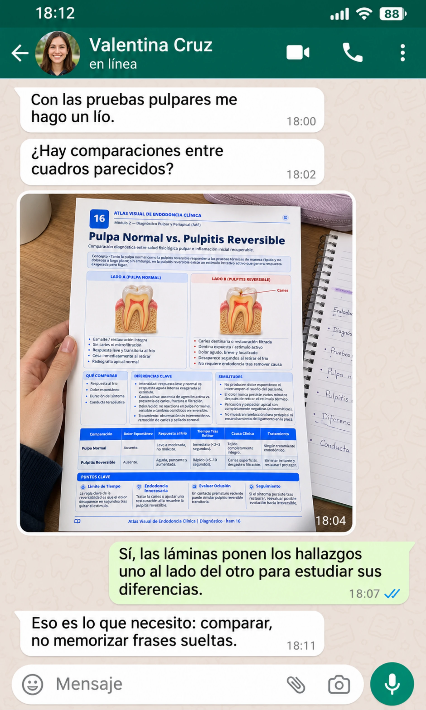
⚡ Instant Digital Access
EVERYTHING YOU WILL RECEIVE TODAY
- +120 Visual Clinical Endodontics Atlas
- Structured across 10 comprehensive clinical modules
- Pulp cavity anatomy & root canal system morphology
- Vertucci canal configurations (Types I–VIII) & isthmuses
- Krasner & Rankow anatomical laws for canal orifice location
- Pulpal & periapical diagnosis (AAE Consensus)
- Thermal testing, EPT, percussion & SLOB radiographic rule
- Hot tooth anesthesia & supplementary injection techniques
- Rubber dam isolation, clamp map & pre-endodontic buildup
- Endodontic emergencies, incision & drainage, and pharmacology
- Step-by-step coronal access in incisors, canines, premolars & molars
- MB2 canal location & C-shaped canal management
- Electronic apex locator (EAL), Ingle method & apical constriction
- Apical patency, Glide Path, IAF & Master Apical File (MAF)
- Hand file kinematics & Roane Balanced Force technique
- Step-Back vs. Crown-Down shaping techniques
- Continuous rotary vs. reciprocating NiTi instrumentation
- Irrigation protocols with NaOCl, 17% EDTA & 2% Chlorhexidine
- Passive ultrasonic irrigation (PUI), sonic & manual dynamic activation
- Intracanal medication with Calcium Hydroxide Ca(OH)₂ & double seal
- Master cone fit, lateral compaction, warm vertical & single-cone obturation
- Bioceramic sealers & repair cements (MTA, Biodentine, premixed)
- Apexogenesis, apexification, revascularization & IADT dental trauma
- Root resorptions, cracked tooth syndrome, endo-perio lesions & pediatric endo
- Nonsurgical retreatment, post removal, perforations, ledges & apical microsurgery
- Instant & lifetime access on smartphone, tablet, or computer
- High-definition PDF files ready for digital reading & printing
AND THAT’S NOT ALL…
YOU ALSO RECEIVE
🎁 3 EXCLUSIVE BONUSES
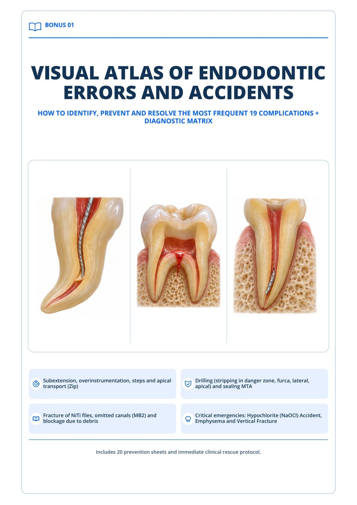
VISUAL ATLAS OF ENDODONTIC ERRORS & ACCIDENTS
A dedicated visual guide on how to prevent, recognize, and manage ledges, perforations, apical transportation, separated files, and NaOCl extrusion.
Value: $24FREE
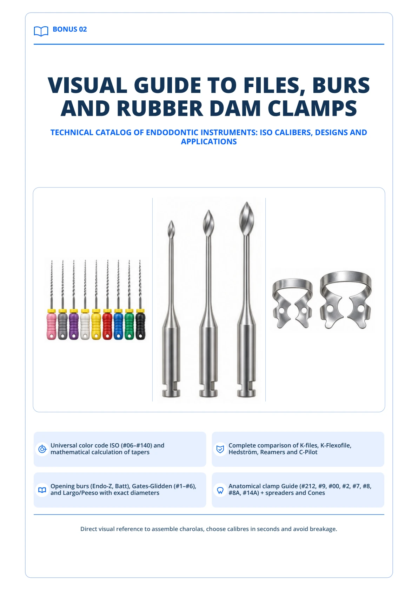
VISUAL GUIDE TO ENDODONTIC FILES, BURS & RUBBER DAM CLAMPS
A visual catalog to quickly identify ISO color codes, tapers, cross-sections, Gates/Largo/Endo-Z burs, and the exact rubber dam clamp for every tooth.
Value: $21FREE
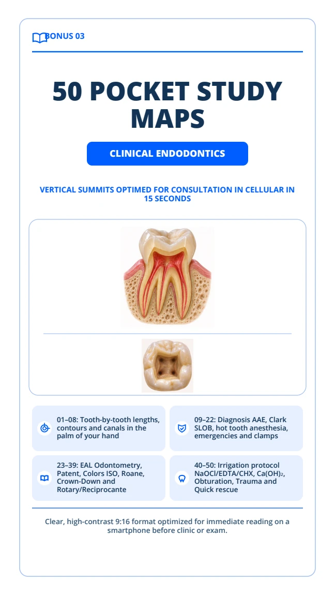
50 ENDODONTIC POCKET STUDY MAPS
Mobile-optimized vertical flashcards with tooth lengths, access outlines, AAE diagnosis charts, and chairside protocols.
Value: $15FREE
⏰ LAST CHANCE — SPECIAL OFFER ENDS TODAY
Choose the ideal plan for you
BASIC PLAN
50 Essential Clinical Endodontics Atlas Sheets

- 50 Essential Clinical Endodontics Atlas Sheets
- Fundamentals, pulpal diagnosis & coronal access outlines
- Internal morphology & canal orifice location
- Digital PDF format
- Lifetime access
- 7-day money-back guarantee
- ✕ Does not include the 3 exclusive bonuses
- ✕ Does not include the full library (+120 Atlas sheets)
From $27.90
$7.90
One-time payment · Instant delivery
You save $20.00
GET THE BASIC PLAN92% of students & clinicians choose the Complete Plan below:

COMPLETE PLAN
+120 Visual Clinical Endodontics Atlas sheets covering access cavities, diagnosis, files, irrigation, obturation, and organized steps for study and chairside reference
- Everything in the Basic Plan
- +120 Visual Clinical Endodontics Atlas
- Pulp anatomy, Vertucci types, isthmuses & C-shaped canals
- Pulpal & periapical diagnosis (AAE Consensus)
- Hot tooth anesthesia & supplementary injection techniques
- Rubber dam isolation, clamp map & pre-endo buildup
- Tooth-by-tooth coronal access (anterior, premolars & molars)
- MB2 canal location & Krasner-Rankow anatomical laws
- Electronic working length (EAL), Ingle, patency & Glide Path
- Step-Back vs. Crown-Down & Roane Balanced Force technique
- Continuous rotary vs. reciprocating NiTi instrumentation
- Irrigation (NaOCl, 17% EDTA, 2% CHX) & PUI ultrasonic activation
- Intracanal medication with Ca(OH)₂ & double temporary seal
- Lateral compaction, warm vertical, single-cone & bioceramics
- Dental trauma (IADT), immature apices & revascularization
- Retreatment, perforations, ledges & apical microsurgery
- Topic-organized library for mobile reading & high-res printing
- Instant & lifetime access
- 🎁 BONUS 01 — Visual Atlas of Endodontic Errors & Accidents
- 🎁 BONUS 02 — Visual Guide to Endodontic Files, Burs & Rubber Dam Clamps
- 🎁 BONUS 03 — 50 Endodontic Pocket Study Maps
FROM $27.90
Today for only:
$13.90
One-time payment · Instant delivery
You save $14.00
GET THE COMPLETE PLAN🛡 7-DAY MONEY-BACK GUARANTEE
You are protected by our 7-day unconditional guarantee. After purchase, explore the entire library. If you feel the material does not match what is presented on this page, simply request a 100% refund through the payment platform.
ORDER NOW & GET INSTANT ACCESS
1. Complete your order
Choose your preferred plan and complete your secure payment.
2. Receive the material
Immediately upon payment confirmation, you will receive access instructions via WhatsApp and the email provided during checkout.
3. Pick your topic
Open the Visual Atlas on any device and jump to the Clinical Endodontics module you want to review.
4. Study & review
Visualize access outlines, diagnostic tables, file sizes, irrigants, and clinical sequences whenever you need a quick refresher.
FREQUENTLY ASKED QUESTIONS
Do I need prior clinical experience in Endodontics?
No. The material is structured to support both dental students taking their first preclinical/clinical steps in Endodontics and practicing dentists who want a rapid chairside review.
Is this suitable for dental students?
Yes. The Atlas was specifically designed as a high-yield visual reference for dental students in preclinical labs, clinical rotations, and board exam preparation.
Is it useful for recent graduates and general dentists?
Yes. Recent graduates and general practitioners use it as a rapid chairside reference to review access outlines, AAE diagnosis, irrigation protocols, and emergency management.
Is this a video course?
No. The Visual Atlas is not a long video course. It is a digital visual library of +120 clinical infographics and visual sheets designed for study, review, and reference in seconds.
Does it show the access cavity and internal anatomy for every tooth?
Yes. It includes dedicated tooth-by-tooth visual sheets (maxillary and mandibular incisors, canines, premolars, and molars) with average lengths, canal counts, outline forms, and MB2 location.
Does it include AAE pulpal and periapical diagnostic criteria?
Yes. Module 2 covers the complete AAE diagnostic terminology (normal pulp, reversible/irreversible pulpitis, necrosis, apical periodontitis, and abscesses) along with clinical sensibility tests.
Does it explain instrumentation and irrigation techniques?
Yes. You will find visual comparisons of Step-Back vs. Crown-Down, Balanced Force, rotary vs. reciprocating systems, and chemical irrigation with NaOCl, EDTA, and CHX.
Does it cover ISO files, burs, and rubber dam clamps?
Yes. Both the main Atlas and Bonus 02 include visual charts of ISO file color codes and tapers, Gates-Glidden, Largo, and Endo-Z burs, plus clamp selection for every tooth group.
Does it cover procedural accidents like ledges or perforations?
Yes. The Complete Plan includes dedicated plates on procedural accidents plus Bonus 01 focused entirely on preventing and managing ledges, perforations, separated files, and NaOCl extrusion.
Can I access it on my phone or tablet?
Yes. You can read and download the files on your smartphone, tablet, or computer anytime.
Can I print the material?
Yes. All PDF files are formatted in high resolution so you can print any pages you want for personal study or clinical binders.
How do I receive access?
Immediately after payment confirmation, you will receive access instructions in your email and WhatsApp provided during checkout.
Is access lifetime?
Yes, you get lifetime access to all files included in your chosen plan and can save them permanently to your devices.
Are there any monthly fees or subscriptions?
No. It is a single one-time payment with zero recurring charges.
Does this material replace dental school lectures or textbooks?
No. The Visual Atlas is an educational study and reference aid; it does not replace formal instruction, scientific literature, official guidelines, faculty supervision, or professional clinical judgment.
Is there a refund guarantee?
Yes. You have a 7-day unconditional money-back guarantee through the payment platform if you are not completely satisfied.
GET STARTED TODAY
Carry a complete library of +120 Visual Clinical Endodontics Atlas sheets on your phone—covering access cavities, diagnosis, files, irrigation, obturation, and clinical steps organized for instant review whenever you need it.
Emily R.
Austin, TX
Just got instant access to the Visual Atlas of Clinical Endodontics. Order completed just now.
1 min ago